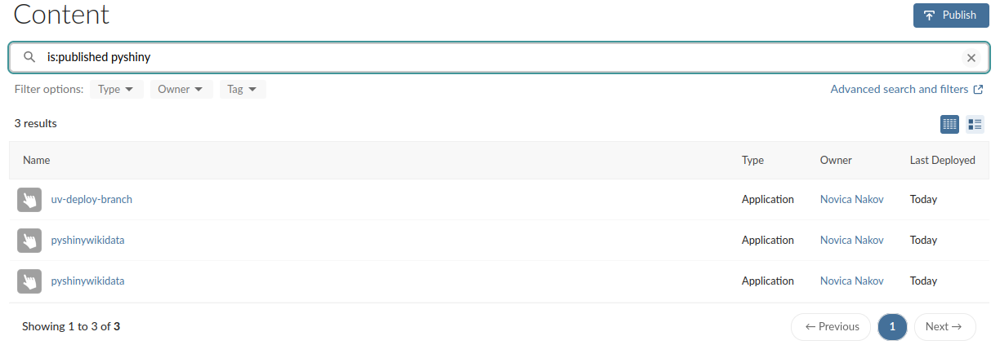

I ended my previous post Using uv to manage the environment for a Python Shiny app and setting up a GitHub action to publish it to Posit Connect with:
Posit Connect can only listen to branches, so the idea is to have a deploy branch which Connect publishes, but which is managed by GitHub actions.
It seems this is not correct.
The Python deployment
Initially I was looking to publish a Python Shiny app, and indeed the rsconnect-python package seems to be able only to deploy new content even when there are no changes to the manifest.json file.
Below you can see that there are two pyshinywikidata deployments, but it is the same app. It is just what happens when I run the pipeline twice.

In other words, it seems that the command:
uvx --from rsconnect-python rsconnect deploy manifest --server=$CONNECT_SERVER --api-key=$CONNECT_API_KEY manifest.jsondoes not recognize that there is already an existing content with the same manifest file on the server.
The R deployment
However, this is not the case with deploying an R Shiny app. In particular, this seems not to be the case when deploying an R Shiny app using the RStudio actions provided by Posit. This one is focused on R and doesn’t show in Google searches when looking to deploy a Python app.
Using this action in a workflow makes it possible to update existing deployments, which is great.
However, the R way of doing things has some other strange quirks, most notably that the renv.lock file should be kept updated in the repository as well. This complicates things a bit when the app that needs to be deployed is written with {golem}.
In this case, renv.init() does not know that the app needs to be installed in the deployment too, in order to be loaded. And, that additional packages are required as well. Therefore, adding these dependencies has to happen manually with renv::record(). Besides the packaged app, four more packages need to be added with renv.record(): pkgload, pkgbuild, desc, and procesx.
This complicates matters a bit, because it is another manual step that can be easily forgotten, and in that case the deployment will fail.
This is because, as the renv FAQ explains:
For a package to be recorded in the lockfile, it must be both: 1. Installed your project library, and 2. Used by the project, as determined by renv::dependencies().
Altering the renv settings may be the best approach as described in the FAQ too.
The Python deployment, again
But, if the action exists, can it be used for Python apps as well?
The answer to that is yes.
Digging through the repository for RStudio actions, and the TypeScript client library for the Posit Connect API I found out that the good people at Posit have written tests for deploying a Flask app (which is Python!). So if it works for Flask it will work for Shiny, and indeed it does.
It seems to me that rsconnect-ts offers a bit more flexibility than rsconnect-python. As far as I can tell, I cannot use rsconnect-python to check if content already exists. At the same time, it seems the rsconnect-ts, still being a beta-quality package, is not really being advertised, or maybe not even been work on actively.
Summary
In this article I tried to clarify some of my confusion regarding using GitHub Actions to deploy R and Python Shiny apps, and probably I added a bit of new confusion as well. I will try to keep this series updated as I learn new things or better ways to achieve gh-actions deployments. I would also appreciate suggestions for other relevant content if anyone has found something I have missed.